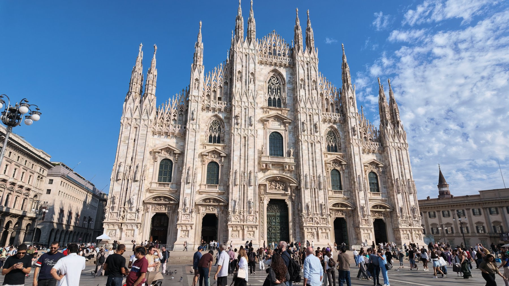

出发前规划🎒欧洲出发前准备手册路线、航班、住宿、预约和随身清单，都放在这里。想看看我们出发前如何安排行程，就从这一页开始。每日行程交通住宿打包清单手机日历看出发前准备 →这是当时的计划，具体经历请看归来攻略。
归来实拍攻略📷意大利与法国，走过之后从多洛米蒂的山，到巴黎的名作。实拍照片、喜欢的一餐、走错的路，还有下次会调整的安排，一起写给准备出发的你。完整路线22 张实拍亲身经历实用提醒看归来实拍攻略 →2026 年秋，上海经郑州飞米兰，走过意大利与法国。